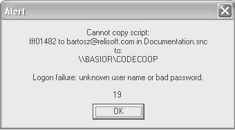

The first time computers on the LAN talk to each other, you might get a logon failure alert:

That means that your computer doesn't know how to log on to the other computer in order to access its share.
To remedy this, open your Network Neighborhood (Or Computer > Network on Vista), find the share listed in the alert, and open it. You'll be prompted for a password. Enter the password and select the checkbox "remember password".